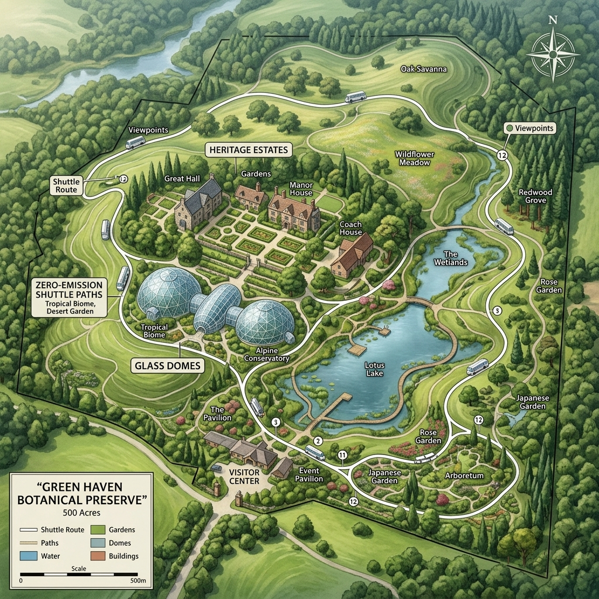

Connect with the Preserve
Specialized Channels
General Inquiries
For visiting hours, ticket questions, or general feedback about your visit.
hello@elysiangardens.comResearch & Lab
Scientific partnership inquiries, database access, or genomic collaboration requests.
science@elysiangardens.comPatron Support
Direct concierge line for Heritage Patrons and institutional giving programs.
patrons@elysiangardens.comFormal Inquiry
Our concierge team typically responds within 4 working hours.

The Central Preserve
Located in the rolling hills of the northern estates, our central preserve is 500 acres of protected botanical heritage. We recommend arriving via our zero-emission shuttle from the central station.
Address: 100 Heritage Valley, Botanical District, EG 09232
Shuttle Service: Every 20 minutes from Central Hub.
REAL-TIME SUPPORT STATUS
Press & Media Resources
Journalists and content creators can access our high-resolution archival image library, brand guidelines, and official press releases via our dedicated media portal.
Access Media Kit
Institutional FAQ
How do I request DNA specimens for university research?
All specimen requests must go through our Scientific Ethics Board. Please use the 'Research' category in the form above to start the process.
Are private events available on short notice?
Due to our conservation protocols, most glass-wing events require at least 6 months lead time. Urgent inquiries for small retreats (under 10 guests) may be considered.
What is the zero-waste policy for visitors?
We are a zero-plastic facility. Visitors are provided with reusable glass containers for water upon entry, and all waste must be disposed of in our biological composting hubs.
The Visiting Protocol
Photography
Personal photography is encouraged. Professional equipment requires a permit.
Attire
Sensible trail footwear and climate-appropriate attire recommended.
Accessibility
95% of our primary canopy trails are fully ADA-compliant.
Join the Legacy
Elysian Gardens is always looking for world-class botanists, data scientists, and administrative curators. If you have a passion for high-altitute preservation, we'd like to hear from you.
A Living Dialogue
We view every inquiry as the beginning of a conversation about the future of our planet. Thank you for your interest in the Elysian heritage.